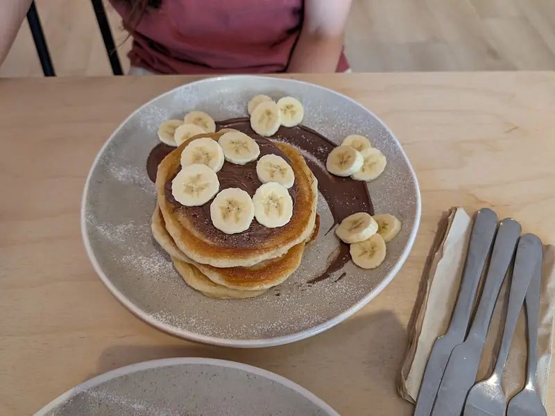

Фото: Andy Li, CC0

Банановые панкейки из трёх продуктов
Панкейки из банана, яиц и овсянки без муки и сахара
15 мин2 порц.294 ккал на порциюБ 11 · Ж 10 · У 39Американская кухня
Продукты на 2 порц.
- Бананы2 шт
- Яйцо куриное2 шт
- Овсяные хлопья3 ст. л.
- Растительное масло1 ч. л.
Как готовить
- Выберите спелые бананы с тёмными точками на кожуре: они слаще и легче разминаются.
- Разомните бананы вилкой в пюре.
- Вбейте яйца, добавьте хлопья и перемешайте. Оставьте на 5 минут.
- Разогрейте сковороду на слабом огне и смажьте тонким слоем масла.
- Выкладывайте тесто по 1 ст. л., делая небольшие кружки.
- Жарьте по 1,5-2 минуты с каждой стороны, пока низ не подрумянится. Переворачивайте аккуратно.
- Подавайте с ягодами или йогуртом.
Совет. Делайте панкейки маленькими и жарьте на слабом огне: без муки они хрупкие и на сильном огне подгорают раньше, чем пропекутся.